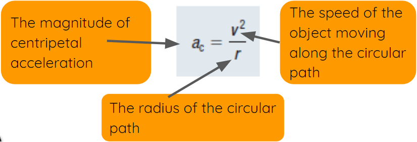

Centripetal Acceleration
Select each tab to learn more.
Objects are said to be in a uniform straight motion if they are travelling with a constant speed in a fixed direction.
Cars travelling at a constant speed in a fixed direction are in a uniform straight motion.
It is defined to be the motion of an object with a constant speed along a circular path of a constant radius.
Objects are said to be in a uniform circular motion if they are travelling along a circular path of a constant radius at a constant speed.
Their velocity constantly changes their direction along that circular path.

Centripetal Acceleration
The instantaneous Acceleration that it is directed toward the centre of a circular path.
The average acceleration of an object is given by: 
For an object moving with a uniform circular motion, the velocity changes its direction continuously with time.
It follows that the centripetal acceleration is not zero.
Forces and Centripetal Acceleration
According to Newton’s 2nd Law, a net force causes objects to accelerate in the same direction of the net force.
By considering an athlete swings a metal ball attached to a wire and a handle, we can see the following:
The athlete introduces a force of tension in the wire directed towards the handle.
This tension keeps the ball in a circular path.
The greater the tension, the greater the acceleration towards the centre, and the faster the ball moves in the circular path.

Equation of Centripetal Acceleration


The direction of the centripetal acceleration is towards the centre of the circular path.

For constant radius, as the speed increases, the cenripetal acceleration increases.
This causes the direction of the velocity to change more rapidly than it would at a slower speed.
For constant speed, as the radius becomes larger, the centripetal acceleration decreases.
This causes the direction of the velocity to change more slowly.
Centripetal Acceleration in terms of Period (T) & r
Period (T): the time required for rotating, revolving , or vibrating objects to complete one cycle.


For uniform circular motion, the speed is constant.
Speed equals the length of the path the object travels divided by the time it takes along this path.
For one cycle, the path is the circumference of circle, and the time is just the period (T).
Centripetal Acceleration in terms of Frequency (f) and r
Frequency (f): the number of rotations, revolutions, or vibrations of an object per unit time; the inverse of period.

The SI units for frequency is Hz
It is equivalent to 1/s..